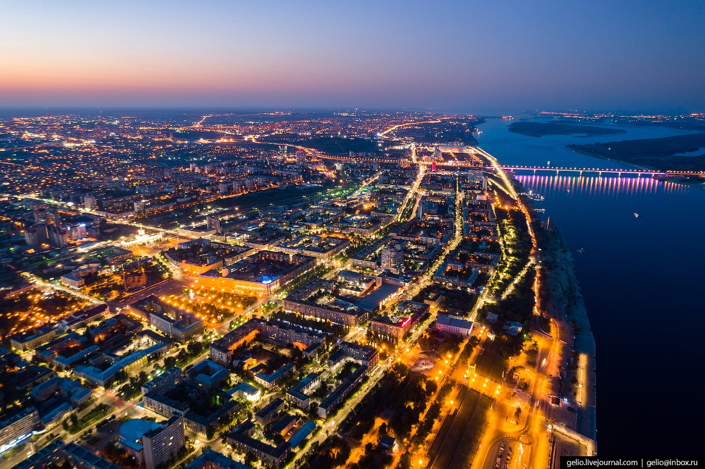

Волгоград

Волгогра́д (Царицын) — город на юго-востоке европейской части России с населением 1 013 468 человек (2019). Административный центр Волгоградской области. До 1925 года он носил название Цари́цын, с 1925 по 1961 год — Сталингра́д. Город-герой, важнейший пункт обороны Царицына и Сталинградской битвы. Город областного значения, образует городской округ город-герой Волгоград как единственный населённый пункт в его составе.
В 2018 году Волгоград принял матчи Чемпионата мира по футболу, так же в городе построена фан-зона для футбольных болельщиков, в Волгоград приезжали такие известные музыкальные группы как Arash и Kadebostany.
Волгоград расположен в нижнем течении Волги на западном её берегу с разнообразными формами рельефа: Приволжской возвышенности своей самой южной оконечностью, восточную часть города занимает Сарпинская низменность она представленная Сарпинско-Даванская ложбина начинающейся в районе Виновки и тянущийся между первой и второй террасами Волги практически через весь город с севера на юг, по которой, к примеру проходит Первая Продольная Магистраль города, в восточной части «Заканалья» Красноармейском районе Сарпинская низм. представлена не только Сарпино-Даванской ложбиной шириной в несколько км, но и собственно Сарпинской низменностью и так же в этом районе расположены участки Ергеней заходящие в черту городского округа Волгограда.